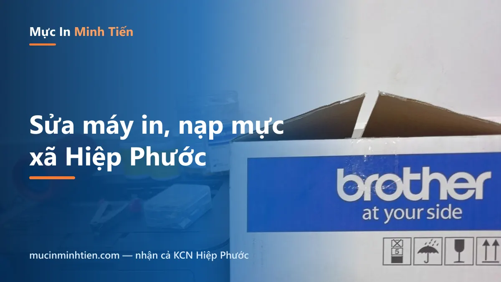
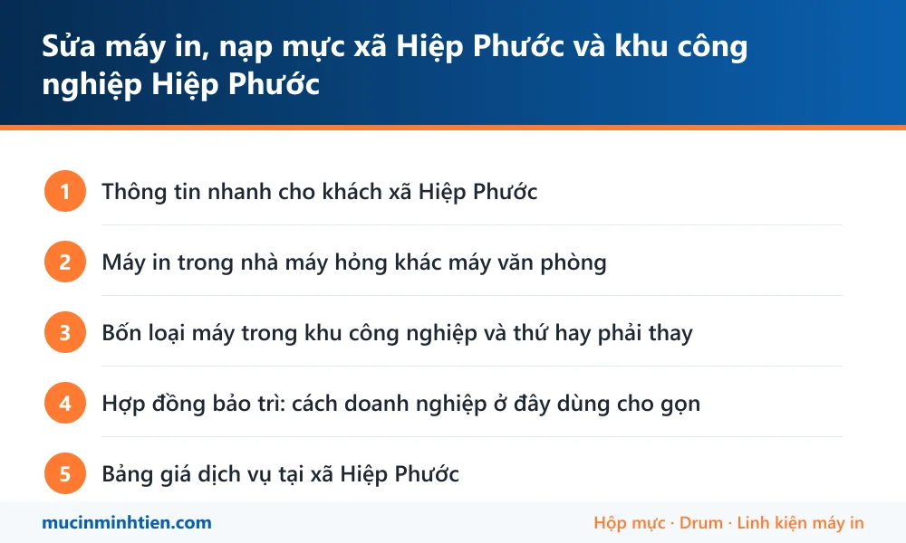

Sửa máy in, nạp mực xã Hiệp Phước và khu công nghiệp Hiệp Phước

Minh Tiến nhận sửa máy in và nạp mực cho nhà máy, kho bãi trong khu công nghiệp Hiệp Phước và khu dân cư xã Hiệp Phước. Đây là địa bàn xa trung tâm nên bên mình đi theo tuyến và hẹn giờ cụ thể; doanh nghiệp nhiều máy nên gộp một buổi kiểm tra toàn bộ. Có hoá đơn VAT và hợp đồng bảo trì định kỳ.
Thông tin nhanh cho khách xã Hiệp Phước
| Hạng mục | Chi tiết |
|---|---|
| Cách đặt lịch | Đặt trước nửa buổi hoặc trước một ngày, bên mình chốt khung giờ cụ thể thay vì hẹn chung chung |
| Phạm vi | KCN Hiệp Phước giai đoạn 1 và 2, cảng, kho bãi dọc Nguyễn Văn Tạo, Lê Văn Lương và khu dân cư xã Hiệp Phước |
| Loại máy nhận | Máy laser và đa năng văn phòng nhà máy, máy in mã vạch dán thùng, máy in phiếu cân xe, máy in kim nhiều liên |
| Nhiều máy một lần | Từ 3 máy trở lên nên gộp một buổi kiểm tra toàn bộ — rẻ hơn gọi lẻ và không phải chờ nhiều lần |
| Giấy tờ | Xuất hoá đơn VAT đầy đủ cho cả dịch vụ và vật tư; có hợp đồng bảo trì định kỳ nếu doanh nghiệp cần |
| Thủ tục ra vào | Báo trước tên công ty, cổng vào, người đăng ký với bảo vệ; nơi nào yêu cầu đồ bảo hộ thì kỹ thuật viên mang theo |
Máy in trong nhà máy hỏng khác máy văn phòng
Cùng một model, đặt trong văn phòng công ty thì chạy vài năm không sao, đưa vào nhà xưởng hoặc kho thì nửa năm đã phải gọi thợ. Ba lý do, gặp ở hầu hết nhà máy khu Hiệp Phước:
- Bụi và hơi ẩm từ sông. Bụi bám vào trống và gương quang làm bản in mờ từng mảng; hơi ẩm làm giấy dính nhau, kẹt liên tục.
- In theo đợt, khối lượng dồn. Cuối ca in một loạt phiếu, máy nóng liên tục nên cụm sấy và bộ kéo giấy hao nhanh hơn nhiều so với in rải đều trong ngày.
- Máy đặt gần dây chuyền. Rung và nhiệt làm bánh răng, con lăn mòn sớm.
Cho nên với nhóm khách này, vệ sinh định kỳ tiết kiệm hơn hẳn sửa khi hỏng — chưa kể hỏng giữa ca là dây chuyền phải dừng chờ giấy tờ.
Bốn loại máy trong khu công nghiệp và thứ hay phải thay
Máy laser văn phòng nhà máy — in hợp đồng, báo cáo, phiếu xuất kho. Hay thay hộp mực, trống, gạt. Máy dòng HP M501/M506 dùng chung lô ép 87A, là thứ hao khi in khối lượng lớn.
Máy photocopy đa năng — phòng hành chính nhà máy hay dùng máy Ricoh, Canon iR, Bizhub. Vật tư hay phải thay là gạt mực Ricoh MP-4000/5000 và drum máy Canon iR2270/2870.
Máy in mã vạch — dán tem thùng hàng trước khi xuất. Đầu in là bộ phận mòn theo số mét tem đã in; vệ sinh đúng cách kéo dài tuổi thọ đáng kể.
Máy in kim in phiếu nhiều liên — phiếu cân xe, phiếu giao nhận. Hay thay ruy băng, chỉnh đầu kim và căn lại khổ giấy.
Hợp đồng bảo trì: cách doanh nghiệp ở đây dùng cho gọn
Gọi thợ khi máy đã chết luôn là phương án đắt nhất với nhà máy: chờ thợ đi từ nội thành xuống, dây chuyền giấy tờ dừng, và thường phải thay linh kiện lớn vì đã để quá hạn.
Gói bảo trì định kỳ làm những việc sau theo lịch cố định:
- Kiểm tra và vệ sinh toàn bộ máy trong một buổi — bộ kéo giấy, cụm sấy, đầu in mã vạch.
- Thay vật tư đã tới hạn trước khi nó gây sự cố.
- Ghi lại tình trạng từng máy, dự báo cái nào sắp phải thay gì để doanh nghiệp chủ động ngân sách.
- Giữ sẵn vật tư dự phòng cho những model quan trọng, không phải chờ đặt hàng.
Chi phí báo theo số lượng máy và tần suất, xuất hoá đơn VAT. Doanh nghiệp muốn thử trước thì làm một buổi kiểm tra tổng rồi quyết định sau.
Nạp mực cho nhà máy: đừng đợi máy hết sạch mới gọi
Trong nhà máy, hộp mực hết giữa ca là giấy tờ xuất hàng dừng theo. Vì vậy với khách Hiệp Phước, bên mình khuyên làm ngược lại thói quen thường thấy: thay khi máy báo sắp hết, không đợi hết hẳn.
Cách gọn nhất là giữ sẵn một hộp mực dự phòng cho mỗi model đang dùng. Hộp cũ hết thì lắp hộp dự phòng vào in tiếp, hộp vừa tháo ra để kỹ thuật viên nạp lại trong chuyến tới. Dây chuyền không phải dừng phút nào.
Bên mình nhận nạp mực, đổ mực, thay mực cho cả máy laser văn phòng lẫn máy photocopy phòng hành chính, kèm vệ sinh máy trong cùng chuyến vì môi trường ở đây nhiều bụi.
Bảng giá dịch vụ tại xã Hiệp Phước
| Hạng mục | Áp dụng cho | Giá tham khảo |
|---|---|---|
| Nạp mực hộp mực laser | HP, Canon, Brother phổ thông | 80.000 – 150.000 đ |
| Vệ sinh máy in tận nơi | Máy đặt trong xưởng, kho nhiều bụi | từ 100.000 đ |
| Thay trống (drum) | Bản in có vệt lặp theo chu kỳ | từ 120.000 đ |
| Thay gạt mực, trục từ | Bản in sọc hoặc mờ dần | từ 34.000 đ |
| Thay lô ép, lô sấy | Kẹt giấy cuối đường đi, mực không bám | từ 49.000 đ tuỳ dòng máy |
| Thay ruy băng máy in kim | Máy in phiếu nhiều liên | Kiểm tra rồi báo giá |
| Vệ sinh đầu in máy in mã vạch | Máy dán tem thùng hàng | Kiểm tra rồi báo giá |
| Bảo trì định kỳ theo hợp đồng | Nhà máy, kho từ 3 máy trở lên | Báo giá theo số lượng máy |
Giá vật tư lấy đúng theo kho — xem bảng giá 773 mã. Kỹ thuật viên kiểm tra và báo giá trước khi làm; khách đồng ý mới thay.
Vật tư mang sẵn theo xe khi tới xã Hiệp Phước
Địa bàn xa nên xe mang dư vật tư, tránh phải quay lại lần hai. Nhóm hàng thường dùng cho máy nhà máy và kho:
| Vật tư mang theo | Dùng cho | Ghi chú |
|---|---|---|
| Hộp mực laser phổ thông | 12A, 85A, 35A, CF226A, TN-2380 | <a href="../../muc-in/">Tra theo mã mực</a> trước khi gọi cho nhanh |
| Vật tư máy photocopy | Ricoh, Canon iR, Bizhub ở phòng hành chính | <a href="../../san-pham/cum-trong-canon-dr-npg-59-cho-may-ir2002-ir2004-ir2004n-ir2006n/">Cụm trống Canon NPG-59</a> cho dòng iR2002/2004 |
| Drum, gạt, trục từ, bao lụa | Máy chạy khối lượng lớn theo đợt | Thay lẻ, gạt từ 40.000đ, trục từ từ 34.000đ |
| Ruy băng máy in kim | Máy in phiếu cân, phiếu giao nhận | Đọc mã ruy băng trên hộp cũ khi đặt lịch |
| Quả đào, bố thắng, con lăn | Máy kho hút bụi nhiều, hao nhanh nhất | Thay theo cặp cho bền |
| Bộ vệ sinh chuyên dụng | Thổi bụi, lau gương quang, vệ sinh đầu in | Đi kèm gói bảo trì định kỳ |
Lỗi hay gặp ở xã Hiệp Phước và bài hướng dẫn tự xử lý
Nhiều ca chỉ cần làm theo bài là xong, không phải gọi thợ. Đọc trước cho đỡ tốn tiền:
- Máy in bị sọc ngang: bảng chu kỳ lặp — đo khoảng cách vệt là ra đúng bộ phận
- Máy in không kéo giấy — bụi kho làm quả đào chai mặt
- Máy in bị lem mực — cụm sấy bẩn hoặc bao lụa rách
- Cách cài đặt và chia sẻ máy in qua mạng LAN — nối máy dùng chung trong mạng nội bộ nhà máy
- Trang dịch vụ chung khu Nhà Bè — xem phạm vi và cách gom tuyến

trueCâu hỏi thường gặp — khách xã Hiệp Phước
Kỹ thuật viên vào được khu công nghiệp không, thủ tục thế nào?
Đặt trước bao lâu thì có người xuống Hiệp Phước?
Có nhận máy in mã vạch và máy in phiếu cân không?
Hợp đồng bảo trì tính tiền thế nào?
Máy hỏng nặng phải mang về thì nhà máy lấy gì in?
Có bán vật tư giao tận nơi mà không cần kỹ thuật viên không?
Nạp mực cho nhà máy trong KCN Hiệp Phước có làm theo hợp đồng được không?
Có giữ sẵn hộp mực dự phòng cho công ty không?
Khu vực phục vụ khác
- Sửa máy in, nạp mực tận nơi Quận 7 — có mặt trong 45–60 phút
- Nạp mực, sửa máy in tận nơi Quận 4 — sát trung tâm, tới nhanh
- Sửa máy in, nạp mực tận nơi Bình Chánh — Trung Sơn, Bình Hưng, Vĩnh Lộc
- Sửa máy in, nạp mực tận nơi Quận 8 — có mặt 30–45 phút, báo giá trước
- Sửa máy in, nạp mực tại phường Chánh Hưng — tới trong 30 phút
- Sửa máy in, nạp mực tận nơi Nhà Bè — nhận cả khu công nghiệp Hiệp Phước